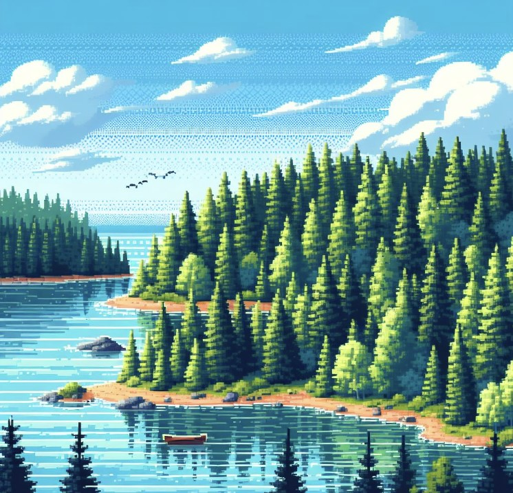

Luukku 9
Saaret ovat kuin luonnon omia helmiä, jotka kutsuvat seikkailijoita tutkimaan ja ihmettelemään. Ne ovat ainutlaatuisia paikkoja, joilla on oma tunnelmansa ja tarinansa, ja jokainen saari tarjoaa vierailijoilleen unohtumattomia kokemuksia ja näkymiä.

Jos intosi saaria kohtaa heräsi tule Harakan saaren saarikierrokselle! Linkki tapahtumaan tästä